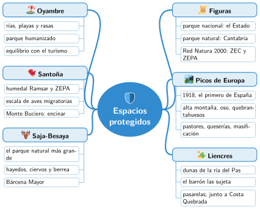

Bloque I · Cantabria, patrimonio natural
UD04 Espacios naturales protegidos
Sesiones
- Sesión 4.1 Parques nacionales y naturales
- Sesión 4.2 Parque Nacional de los Picos de Europa
- Sesión 4.3 Parque Natural de las Dunas de Liencres
- Sesión 4.4 Parque Natural de Oyambre
- Sesión 4.5 Parque Natural de las Marismas de Santoña, Victoria y Joyel
- Sesión 4.6 Parque Natural de Saja-Besaya
Al terminar la unidad
Mapa mental de la unidad

✏️ Repasa la unidad con el mapa: tapa una rama y explica en voz alta lo que pone.